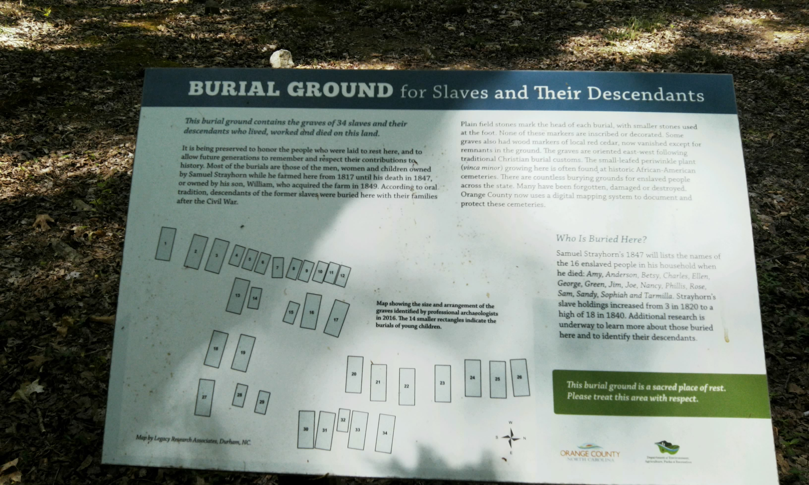

<!DOCTYPE html>
<html lang="en">
<head>
    <meta charset="UTF-8">
    <meta name="viewport" content="width=device-width, initial-scale=1.0">
    <title>Leaflet Map Overlay Utility</title>
</head>

<script src="https://cdnjs.cloudflare.com/ajax/libs/PapaParse/5.4.1/papaparse.min.js" integrity="sha512-dfX5uYVXzyU8+KHqj8bjo7UkOdg18PaOtpa48djpNbZHwExddghZ+ZmzWT06R5v6NSk3ZUfsH6FNEDepLx9hPQ==" crossorigin="anonymous" referrerpolicy="no-referrer"></script>

<link rel="stylesheet" href="https://unpkg.com/leaflet@1.9.4/dist/leaflet.css"
     integrity="sha256-p4NxAoJBhIIN+hmNHrzRCf9tD/miZyoHS5obTRR9BMY="
     crossorigin=""/>

<script src="https://unpkg.com/leaflet@1.9.4/dist/leaflet.js"
     integrity="sha256-20nQCchB9co0qIjJZRGuk2/Z9VM+kNiyxNV1lvTlZBo="
     crossorigin=""></script>

<script src="https://cdn.jsdelivr.net/npm/exif-js"></script>

<script src="./SlaveCemetery.js"></script>
<script src="./graves.js"></script>

<style>
#myfirstmap { height: 550px; width: 100pct}
.slider-container {
    margin-right: 20px;
    display: flex;
    align-items: left;
    flex-direction: column;
}

.slider {
    width: 545px; 
}
.tick-container {
    display: flex;
    justify-content: space-between;
    width: 550px;
    margin-top: 5px;
}

.tick {
    font-size: 12px; 
    color: #888; 
}
</style>

<body>
    <div id="myfirstmap"></div>
</body>

<script>
var mymap = L.map('myfirstmap').setView([36.017845388181385,-79.08324569463731], 17);
L.tileLayer('https://tile.openstreetmap.org/{z}/{x}/{y}.png', {
    maxZoom: 21,
    attribution: '&copy; <a href="http://www.openstreetmap.org/copyright">OpenStreetMap</a>'
    }).addTo(mymap);

var cemeteryLayer = L.layerGroup().addTo(mymap);
var surveylayer = L.layerGroup().addTo(mymap);
var markerLayer = L.layerGroup().addTo(mymap);

graveSites();

var boundary = L.polyline([[36.0175861371018,-79.08334761857986],[36.01765664480204,-79.08318400382997],[36.0177976600132,-79.08318534493449],[36.01779982947604,-79.0832805633545],[36.01774667761984,-79.0833516418934],[36.0175861371018,-79.08334761857986]], {color:"blue", weight:4}).addTo(mymap);
var marker = L.marker([36.01765230586845,-79.08322289586069]).addTo(mymap).bindPopup("cemetery of people enslaved<br>on the Strayhorn plantation<br><a href='https://registerchilton.github.io/Geography456/New%20folder/CemeterySign.html'></a>").openPopup();
function graveSites(){
    for (var i = 0; i < graves.features.length; i = i + 1){
        var marker = L.circle([graves.features[i].lat,graves.features[i].long], {color:'green', fillcolor:'green', opacity:1, radius:1}).addTo(mymap)
        .bindPopup("<a href='"+ graves.features[i].path + "'></a>");
        
        console.log(i)
    }
}


</script>
</html>
